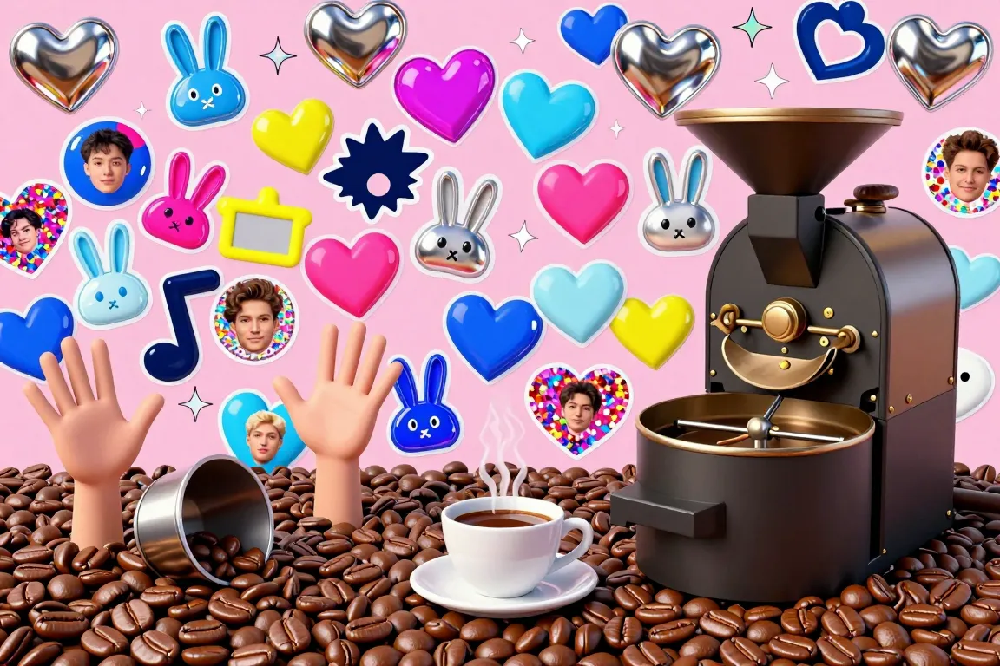

Skinnende krom, godterifarger, søte 3D-former, Web 2.0-glans og tett kollasj med pikselskrift og klistremerker. Det knytter PC Music-utseendet til en spilleliste fra 2019 og til kortvideokulturen.

Kjerneidé
Gjør pop for søt og for lys: ta det søte og kromet så langt at det ser kunstig og rart ut.
Designprinsipper
Sett en pastellgradient som bunn fra #FFC8F0 til #BDF0FF i 160°.
Plasser ett krom- eller blankt 3D-objekt på 40 % til 60 % av utsnittet, med et hardt hvitt høylys.
Legg 4 til 8 klistremerker, stjerner og Web 2.0-knapper i lag med en helning på -20° til 20°.
Sett displaytekst i en fet, rund eller pikselskrift på 48px til 120px, med et mørkt omriss på 2px.
Bruk skarp rosa (#FF2FB3) og elektrisk blå (#2F6BFF) på minst 20 % av flaten.
Legg et glansbånd på 40 % høyde på knapper og paneler, i hvitt ved 40 % dekning.
Klipp videoen hvert 6. til 15. bilde med zoom og blinkbilder.